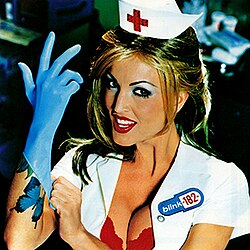
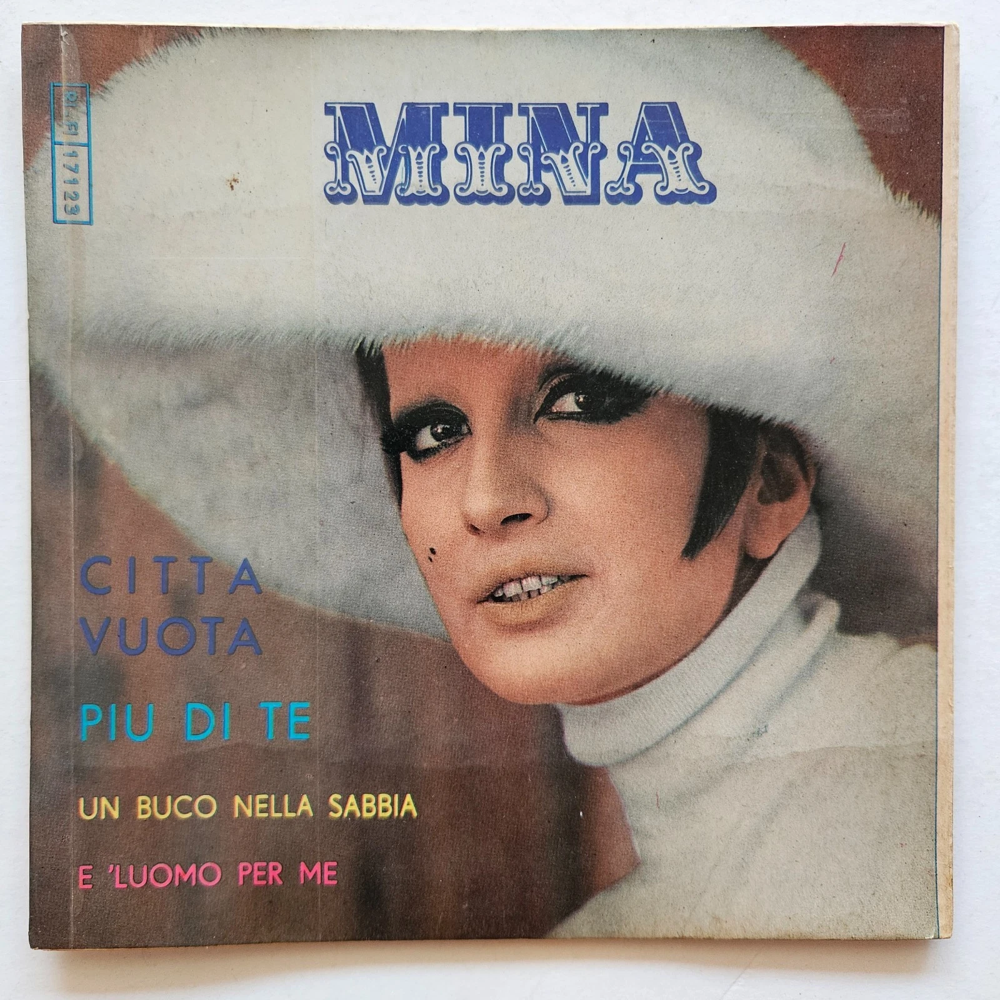
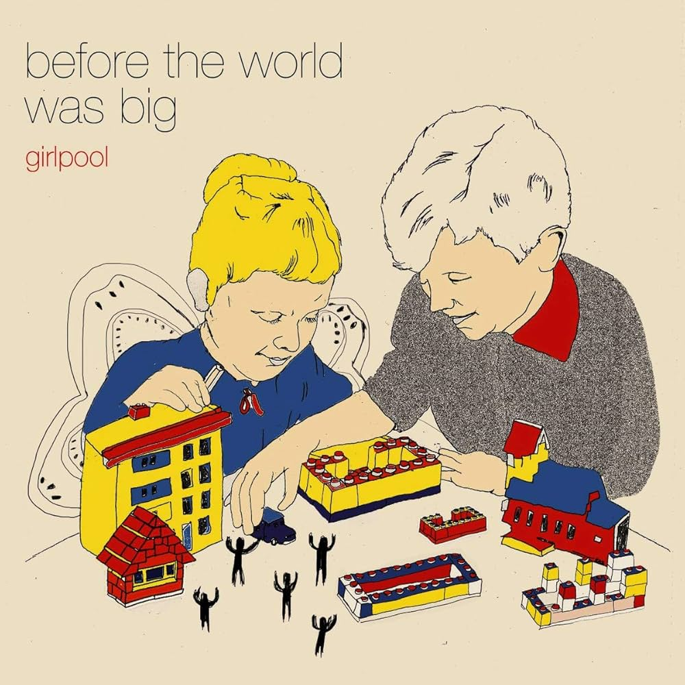
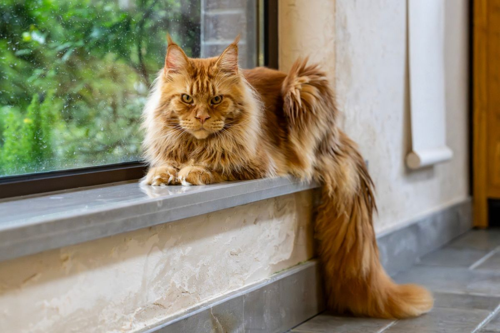
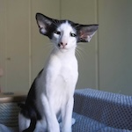

5 To My Feminine Mind
Favorite Albums to Listen to on Vinyl
Vinyl is my favorite format for listening to music. Which I cannot share the sound difference between hearing music played through your phone vs. a record, you'll have to take my word for it. Below are 5 of my favorite albums to listen to when played on a record player.

IGOR - Tyler The Creator
IGOR has never been my favorite Tyler album, however when listening on vinyl, there is a special undertone sound that makes the record sound static-ey. Yes, this is the intended sound. I was also curious by it, but it adds depth to the album!.
Listen To IGOR
Getz/Gilberto - Stan Getz & Joao Gilberto
This album is my absolute favorite to listen to on vinyl. The sound quality is so much better than listening to it on Spotify, and the album itself is just so good. I love the way the music flows together, and how the songs transition into each other. It's a great album to listen to from start to finish.
Listen To Getz/Gilberto
Enema of the State - Blink-182
I grew up on BLINK-182 and this album was a common feature on long car rides with my parents. The quality of Spotify played on a speaker does not hit home as hard as the loud record player blasting songs that I grew up listening to. It provides a similar experience to hearing my parent's CDs in the car.
Listen To Enema of the State
Citta Vuota - Mina
Truthfully, I have never heard this single on my record player before, however the singer is absolutely phenomenal. Out of her entire discography, this song is the one that has stuck out most and remained a favorite for the last 6+ years. I dream to one day own this single and be able to hear it played the way it was meant to be.
Listen To Citta Vuota
Before the World Was Big - girlpool
Nearly 10 years after initially discovering this band and specific album, I can say it is my top 5 albums EVER, apart from my top 5 vinyl lists. This album was hard to find, but was my top-played record for many years. It remains an album that I reminsce about my highschool years and first year at college, a soundtrack for my life at those periods.
Listen To Before the World Was BigCats that I Scream-Squeal Over
I am a huge cat fanatic. Cats are life, cats are love, cats are everything. They're great companions, I have two and they're so sassy and full of life. They bring me immense joy.
Norwegian Forest Cats
So fluffy so precious so beautiful, little forest critters
Say Hi to Norwegian Forest Cats!Sphynx Cats
Hairless cat? More like a living, breathing piece of raw chicken!
Say Hi to Sphynx Cats!Maine Coon Cats

These cats are HUGE can you imagine waking up in the middle of the night and seeing one prowling your house?
Say Hi to Maine Coon CatsOriental Shorthair Cats

Wasn't sure if you were aware, but these cats honk. They do not meow, they honk.
Say Hi to Oriental Shorthair Cats!